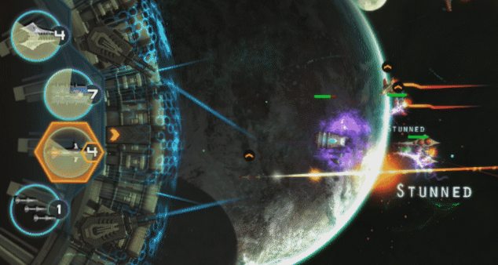

ვიდეო თამაშების ისტორია
ვიდეო თამაშების ისტორიას საფუძველი ჩაეყარა 1950-იან წლებში,
როდესაც მეცნიერებმა დაიწყეს მარტივი თამაშებისა და სიმულაციების შექმნა თვიანთი კვლევების ფარგლებში.
. ვიდეო თამაშებმა დიდი პოპულარობა მოიპოვა 1970-1980-იან წლებში, როდესაც ფართო საზოგადოებას წარუდგინეს არკადული თამაშები და სათამაშო კონსოლები, რომლებსაც გააჩნდათ ჯოისტიკი, ღილაკები და სხვადასახვა სახის კონტროლერი.
1980-იანი წლებიდან მოყოლებული ვიდეო თამაშები იქცა გართობის წამყვან დარგად და მასობრივი კულტურის მნიშვნელოვან ნაწილად.
ერთ-ერთი ყველაზე ადრეული თამაში იყო „Spacewar!“, შექმნილი მეცნიერთა ჯგუფის მიერ.
ადრეული არკადული თამაშები შეიქმნა 1972-1978 წლებში. 1970-იანებში გამოჩნდა პირველი თაობის სახლის კონსოლები,
მათ შორის პოპულარული თამაში „Pong“ და მისი მრავალი „კლონი“. აღნიშნული პერიოდი, ასევე იყო

მეინფრეიმ კომპიუტერების ერა. არკადული ვიდეო თამაშების ოქროს ხანა დაიწყო 1978 წელს და გაგრძელდა 1982 წლამდე. ხურდის სათამაშო აპარატები, არკადული
სისტემები და სახლის კონსოლები, როგორებიც არის Atari 2600 და Intellivision, (რომელთა მიერთება და თამაში შესაძლებელი იყო სტანდარტულ ტელევიზორებზე) ფართოდ იყო გავრცელებული სავაჭრო ცენტრებსა თუ სხვადასხვა დაწესებულებებში.
1980-იანებში ბაზარზე გამოჩნდა ადრეული ონლაინ თამაშები და პორტატიული სათამაშო კონსოლები. სწორედ ამ პერიოდში, 1983 წელს მოხდა 1983 წლის ვიდეო თამაშების კრიზისი. 1976 წელს დაიწყეს მეორე თაობის კონსოლების შექმნა და გაგრძელდა 1992 წლამდე
მესამე თაობის კონსოლები დაფუძნებული 8 ბიტიან პროცესორებზე გამოიშვებოდა 1983-დან 1995-მდე, ხოლო 16 ბიტიანი მეოთხე თაობის კონსოლები — 1987-დან და 1999-მდე. 1990-იანებს ვიდეო თამაშების აღორძინების ხანას უწოდებენ,
რა პერიოდშიც დაეცა არკადულ თამაშებზე მოთხოვნა და პოპულარული გახდა 3D კომპიუტერული, გაუმჯობესებული პორტატიული და PC თამაშები.
მეხუთე თაობის კონსოლებს გამოსცემდნენ 1993-დან 2006 წლამდე და დაფუძნებული იყო 32-64 ბიტიან პროცესორებზე.
ამ პერიოდშივე საფუძველი ჩაეყარა მობილური თამაშებს. 2000-იანებში ხელმისაწვდომი შეიქმნა მეექვსე თაობის კონსოლები (1998-2013) და დაიწყო ონლაინ გეიმინგის და მობილური თამაშების განვითარება.

შეუდგნენ მეშვიდე თაობის კონსოლების გამოცემას. ეს მონაკვეთი გამოირჩეოდა მაღალბიუჯეტიანი თამაშების შემუშავებით, კაზუალური PC თამაშების გამოჩენით, ღრუბლოვანი გამოთვლებისა და ახალი ტექნოლოგიების დანერვგვით ვიდოე თამაშებში, მაგალითისთვის როგორიც არის Wii Remote, რისი საშუალებთაც მოთამაშეს, მოძრაობის და რხევის შედეგად შეეძლო თამაშში პერსონაჟისა და გარემოს კონტროლი2013 წელს გამოჩნდა მერვე თაობის კონსოლები, მათ შორის Nintendo-ს Wii U, Nintendo
One, Sony-ის PlayStation 4 და PlayStation Vita. ასევე PC თამაშებმაც დაიკავეს მნიშვნელოვანი ადგილი სათამაშო ბაზარზე და დღემდე განაგრძობენ ზრდას ციფრული დისტრიბუციის საშუალებით.